Fotografie di lavoro, opere ancora da catalogare e la storia di questo sito.Working photographs, works still to be catalogued, and the story of this website.
La bottega e il cortileWorkshop and courtyard
Le opere fotografate dove nascevano e dove venivano messe ad asciugare al sole.The works photographed where they were made and where they were set out in the sun.
In bottega: Gruppo (1993) appena sbozzato, tra i trucioli.In the workshop: Gruppo (1993) freshly roughed out, among the shavings.Gruppo (1993), un'altra vista in bottega.Gruppo (1993), another view in the workshop.Donna al sole (in piedi), 2003, sollevata per la fotografia.Donna al sole (in piedi), 2003, held up for the photograph.Sculture nel cortile.Sculptures in the courtyard.
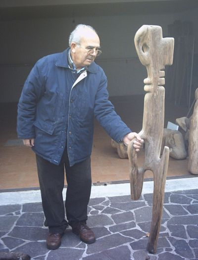
Accanto ad Atleta (1994).Beside Atleta (1994).
Opere da identificareWorks to be identified
Fotografie scattate tra il 2006 e il 2013 di opere che non compaiono nel catalogo del 2005. Se ne riconosci una — titolo, anno, dove si trova — segnalacelo.Photographs taken between 2006 and 2013 of works that are not in the 2005 catalogue. If you recognise one — title, year, where it is now — let us know.
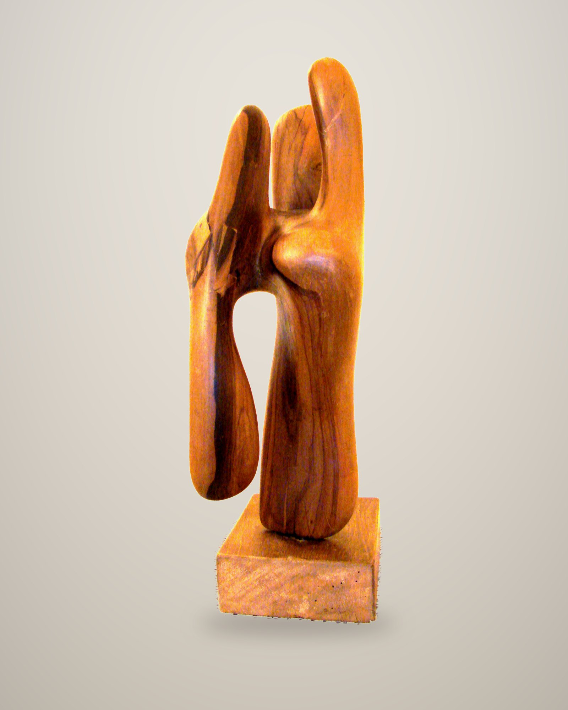
Fotografia 2006. Opera da identificare.Photograph 2006. Work to be identified.Fotografia 2006. Opera da identificare.Photograph 2006. Work to be identified.
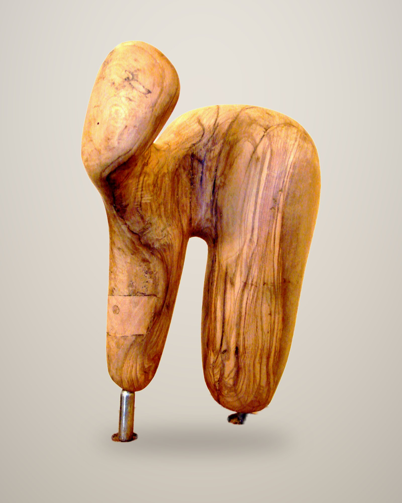
Fotografia 2006. Opera da identificare.Photograph 2006. Work to be identified.
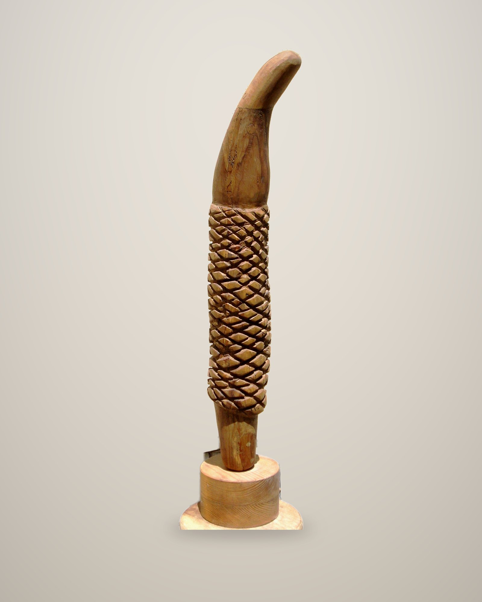
Fotografia 2007. Opera da identificare.Photograph 2007. Work to be identified.
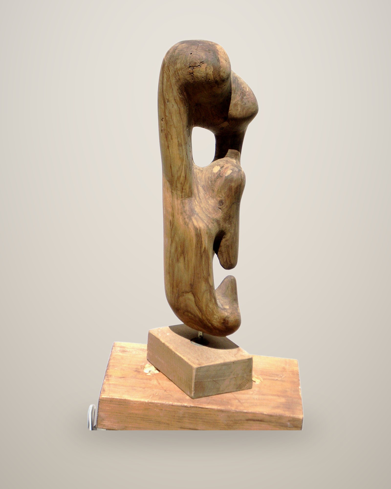
Fotografia 2007. Opera da identificare.Photograph 2007. Work to be identified.
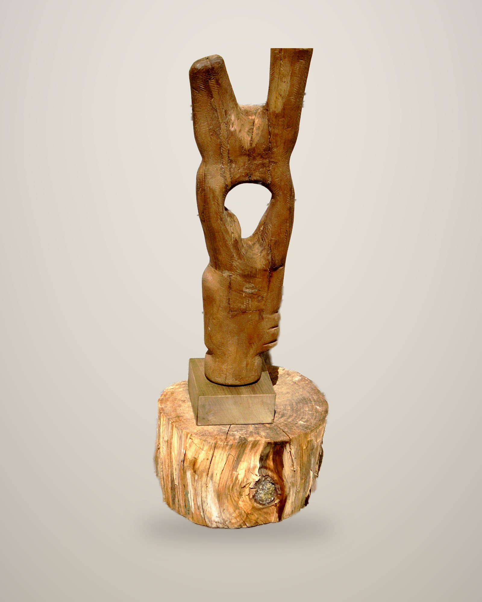
Fotografia 2008. Opera da identificare.Photograph 2008. Work to be identified.
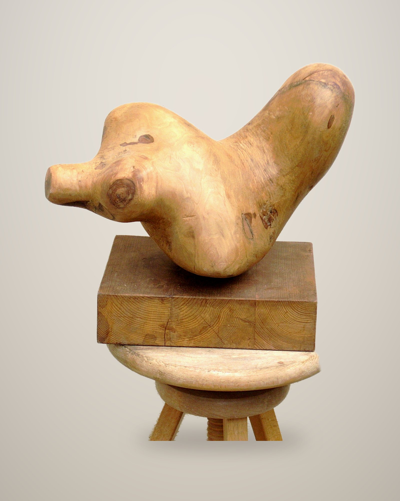
Fotografia 2009. Opera da identificare.Photograph 2009. Work to be identified.Fotografia 2009. Opera da identificare.Photograph 2009. Work to be identified.Fotografia 2009. Opera da identificare.Photograph 2009. Work to be identified.
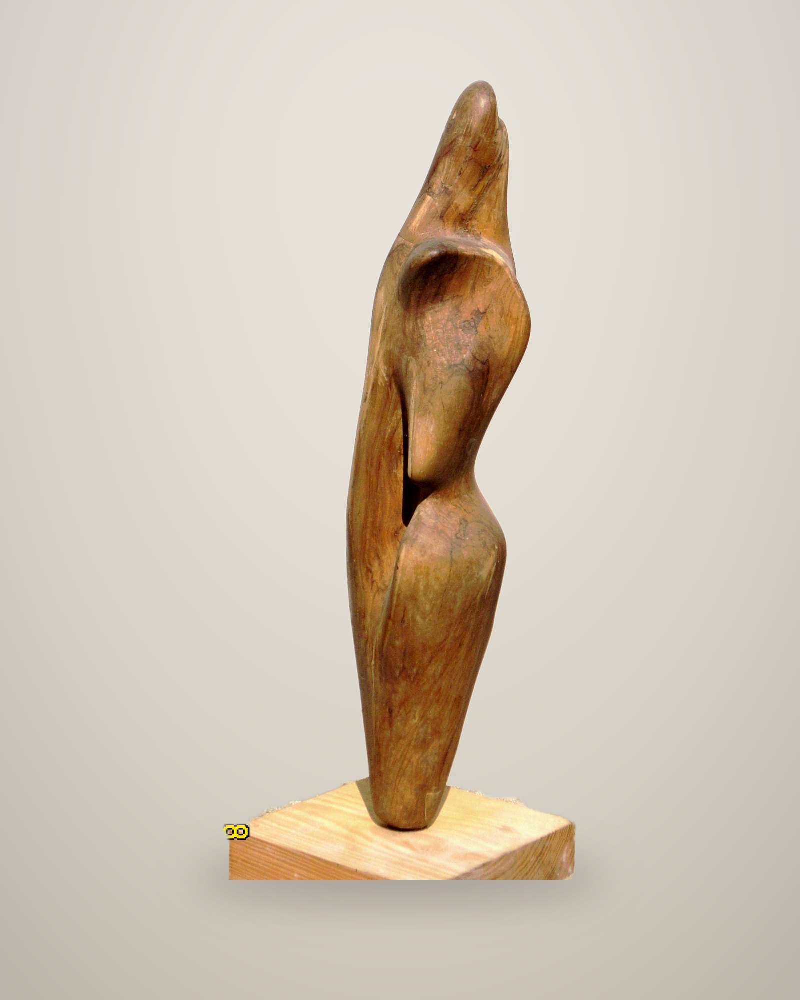
Fotografia 2009. Opera da identificare.Photograph 2009. Work to be identified.
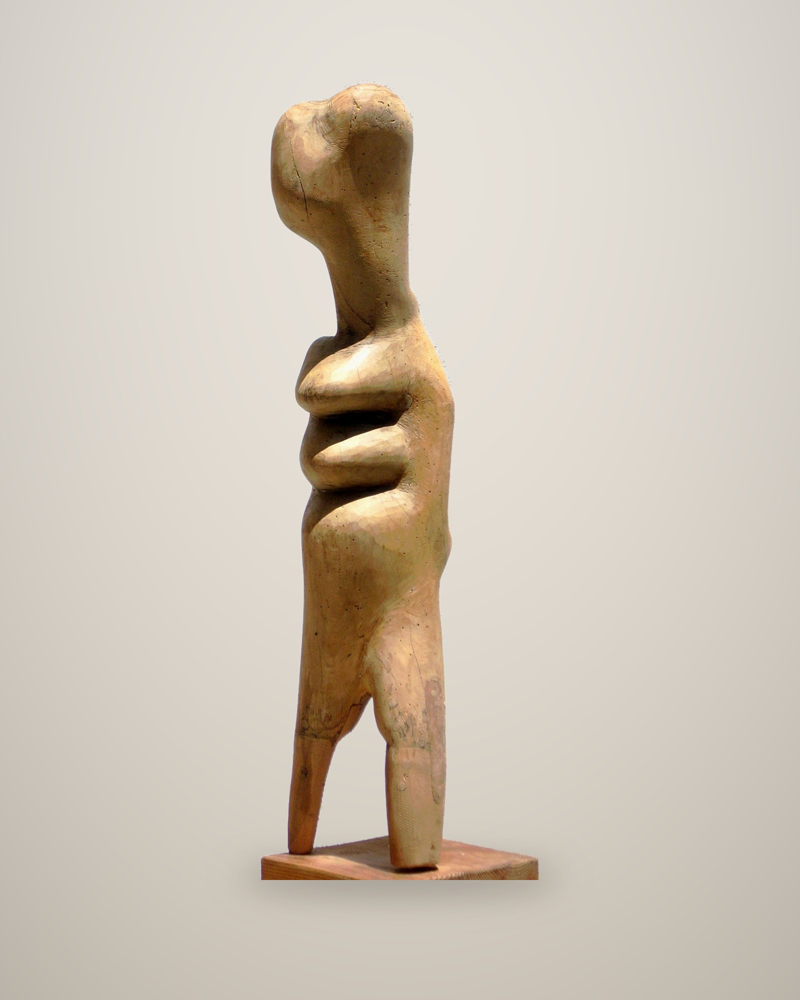
Fotografia 2007. Opera da identificare.Photograph 2007. Work to be identified.Fotografia 2012. Opera da identificare.Photograph 2012. Work to be identified.
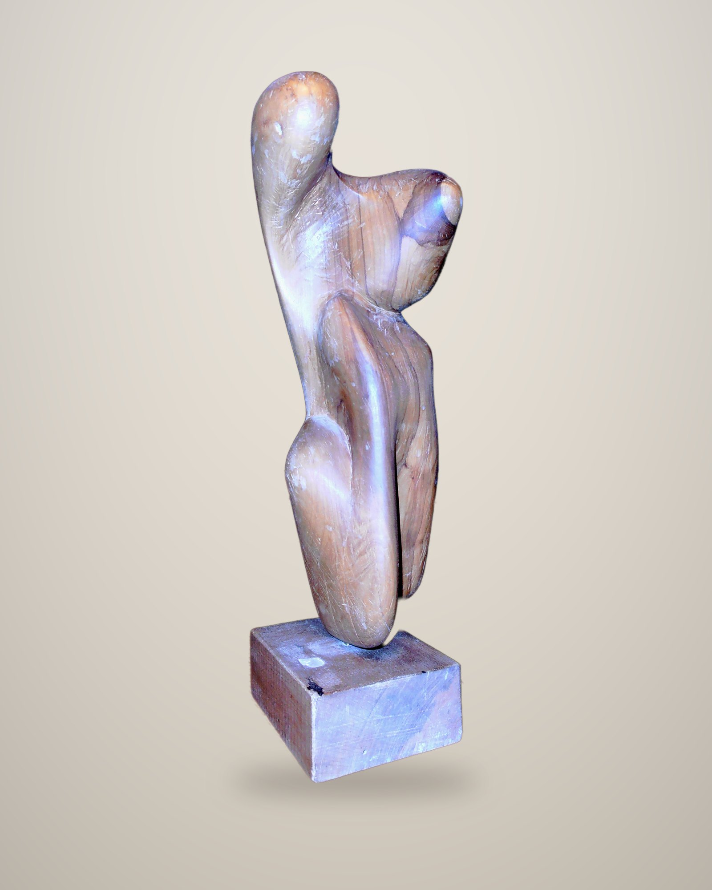
Fotografia 2012. Opera da identificare.Photograph 2012. Work to be identified.
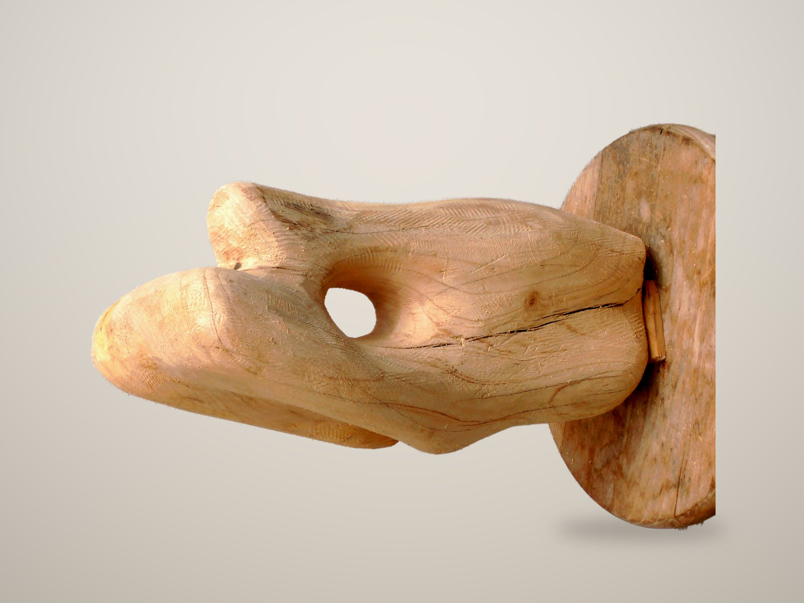
Fotografia 2013. Opera da identificare.Photograph 2013. Work to be identified.Fotografia 2007. Opera da identificare.Photograph 2007. Work to be identified.Fotografia 2007. Opera da identificare.Photograph 2007. Work to be identified.
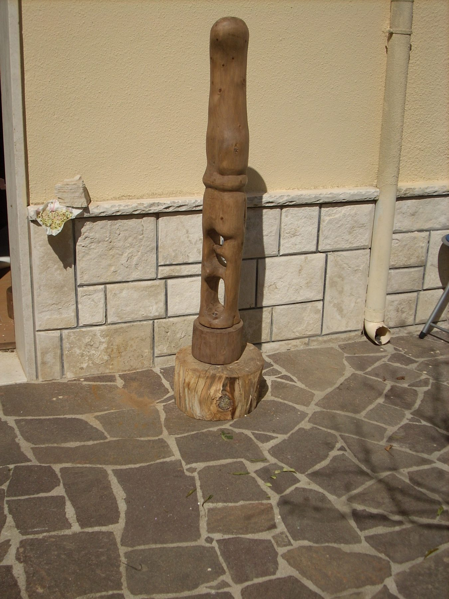
Fotografia 2008. Opera da identificare.Photograph 2008. Work to be identified.Fotografia 2009. Opera da identificare.Photograph 2009. Work to be identified.
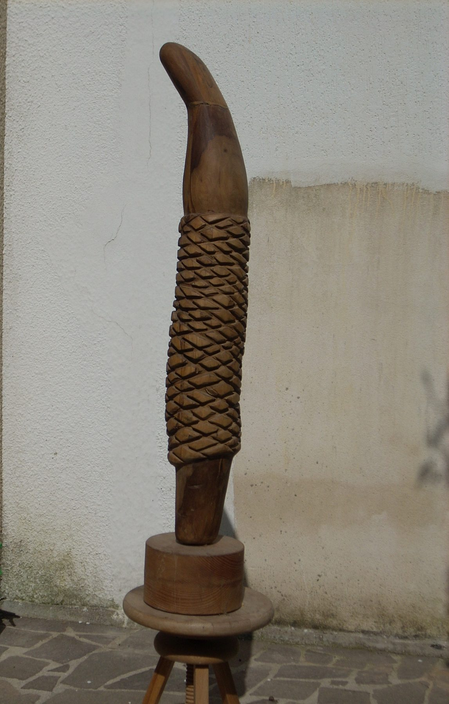
Fotografia 2009. Opera da identificare.Photograph 2009. Work to be identified.
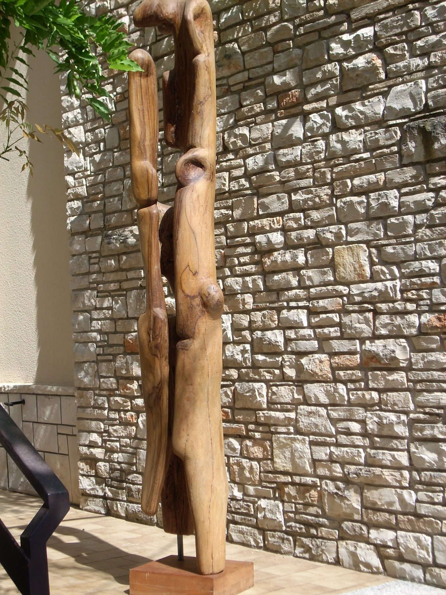
Fotografia 2009. Opera da identificare.Photograph 2009. Work to be identified.
La cappella in 3DThe chapel relief in 3D
Le tre parti del bassorilievo della cappella ricomposte in un modello tridimensionale, da girare e illuminare.The three sections of the chapel relief put back together as a 3D model you can turn and light.Apri il modelloOpen the model →
Le versioni del sitoVersions of the website
Questo sito è il quarto: i primi furono costruiti in famiglia.This is the fourth version of the site; the first ones were built in the family.
2003Prima pagina su Xoom/Virgilio: legno, pietra, bassorilievi.First page on Xoom/Virgilio: wood, stone, reliefs.
2005«Ubaldo Rizzo Virtual Gallery»: sculture per decennio, pitture, didascalie in italiano.“Ubaldo Rizzo Virtual Gallery”: sculptures by decade, paintings, Italian captions.
2007Album fotografico delle sculture (132 immagini).Photo album of the sculptures (132 images).
2026Questo catalogo: numeri di catalogo, schede, percorso.This catalogue: catalogue numbers, work pages, journey.